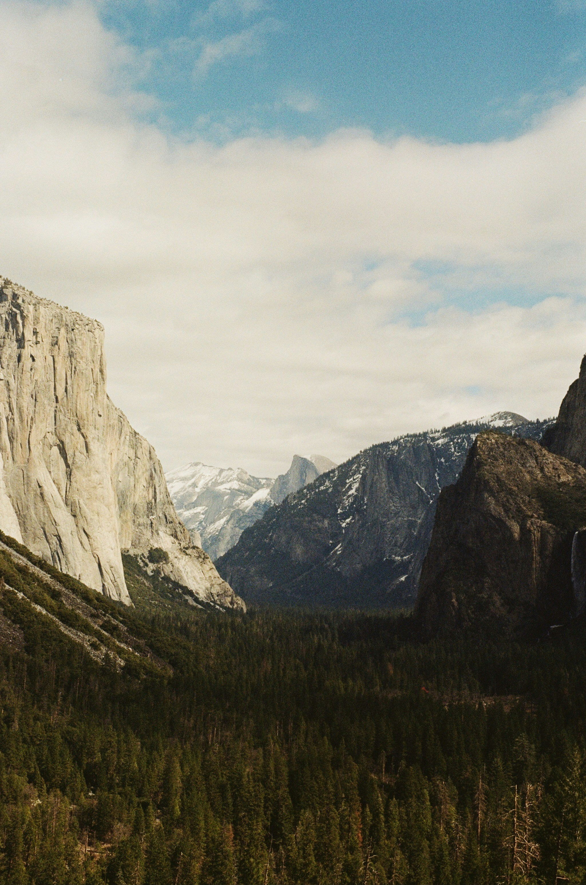
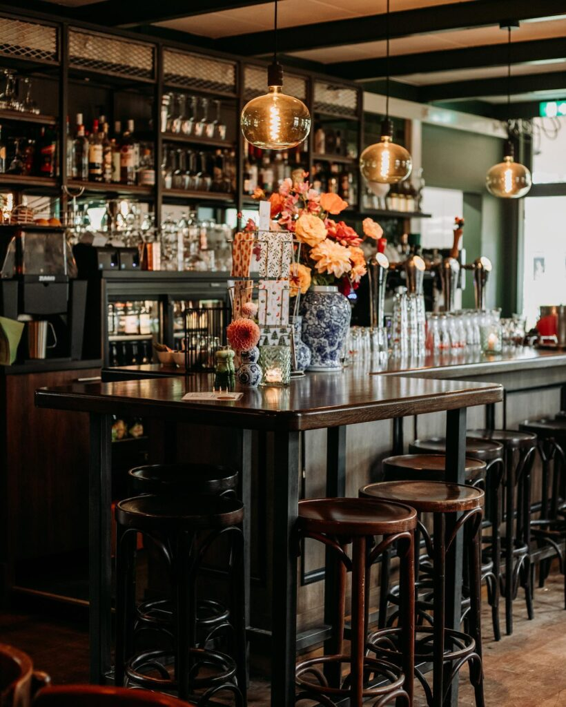
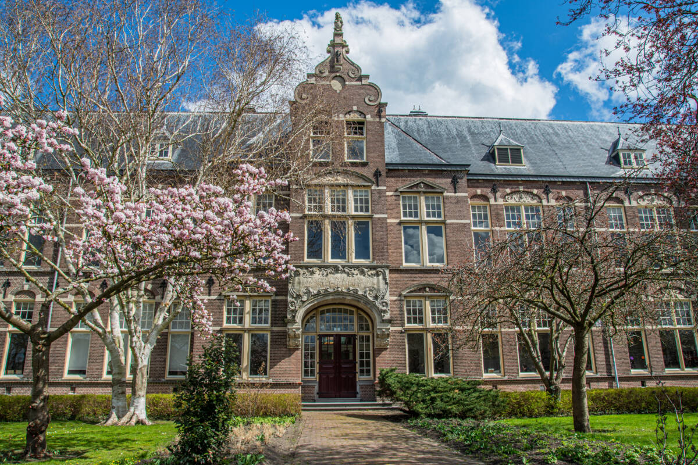
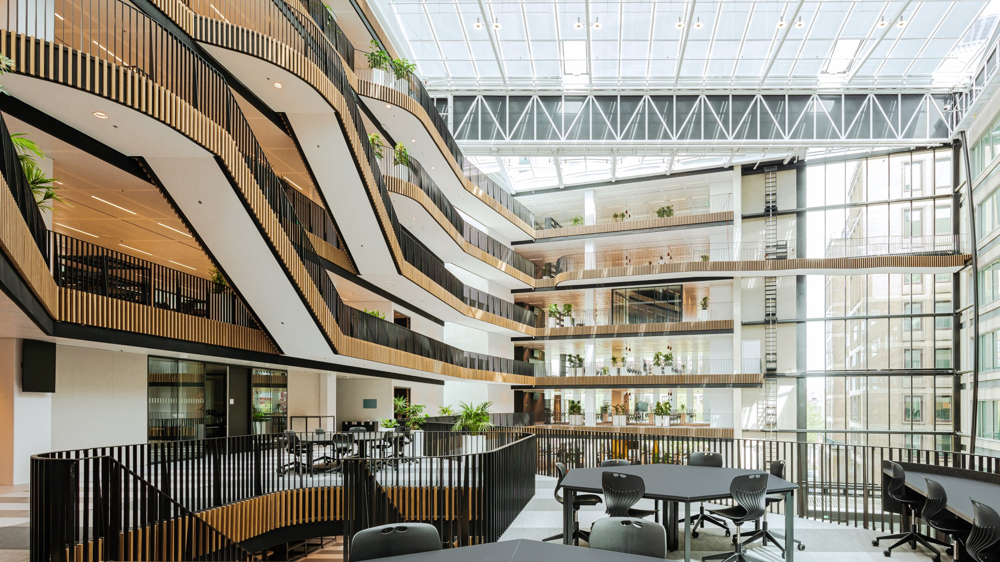

I'm an inquisitive teenager passionate about design. I love crafting projects that are not only visually appealing but also easy to use. My aim is to create thoughtful solutions that leave a lasting impression.



